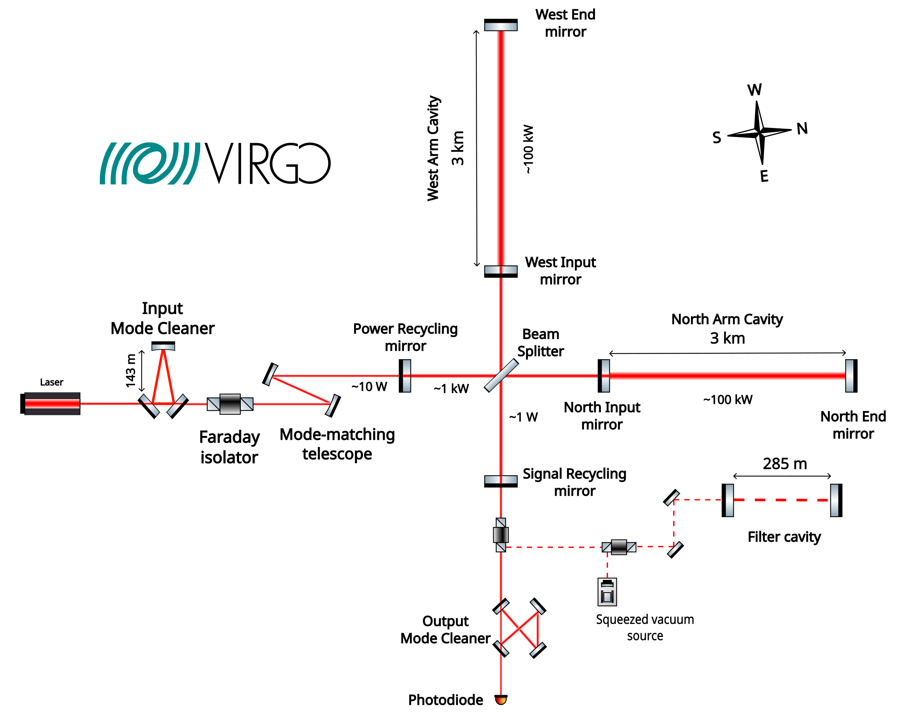

Glitch Classification using Convolutional Networks introspective-swallow/Gravitational-Waves-Glitch-Classification
1. Introduction
The detection of gravitational waves has revolutionized our understanding of the universe. However, the data obtained from detectors like LIGO and Virgo contain various types of noise, including transient noises called glitches. These glitches can be confused with actual gravitational wave signals, making their classification an essential task in gravitational wave astronomy.
This document summarizes the use of Convolutional Neural Networks (CNNs) for classifying glitches in gravitational wave data. We'll explore various CNN architectures, data preprocessing techniques, and evaluation methods used in this field.
2. Gravitational Waves and Detectors
Gravitational waves are distortions in spacetime caused by accelerating masses. They were first predicted by Einstein's theory of general relativity and were directly observed for the first time in 2015 by LIGO.
Detectors like LIGO and Virgo use laser interferometry to measure these tiny distortions. The detectors are extremely sensitive, capable of measuring changes in distance as small as 10^-19 meters.
Figure 1: Schematic of a laser interferometer gravitational wave detector
3. Glitches and Their Classification
Glitches are short-duration noise transients in the detector data. They can have various causes, including environmental and instrumental factors. Classifying these glitches is crucial for:
- Improving the quality of gravitational wave detection
- Understanding and mitigating sources of noise in the detectors
- Distinguishing between real gravitational wave signals and noise
Machine learning techniques, particularly CNNs, have proven effective in classifying these glitches based on their time-frequency representations (spectrograms).
3. Signal Processing Techniques
Before applying machine learning models to gravitational wave data, various signal processing techniques are employed to prepare and analyze the data. Key concepts include:
- Fourier Transform: Used to analyze the frequency content of signals
- Power Spectral Density (PSD): Measures the distribution of power across frequencies
- Spectrograms: Time-frequency representations of signals
- Q-transform: An alternative to Fourier Transform for analyzing signals with varying time-frequency resolution
One crucial preprocessing step is whitening, which equalizes the noise across all frequencies, making glitches more visible:
Figure 3: Effect of whitening on gravitational wave data containing a glitch
4. Convolutional Neural Networks for Glitch Classification
CNNs are a type of deep learning model particularly well-suited for image classification tasks. In the context of glitch classification, spectrograms of the detector data are treated as images, allowing CNNs to learn relevant features for classification.
Key aspects of using CNNs for glitch classification include:
- Data preprocessing: Converting time series data to spectrograms
- Network architecture: Designing appropriate CNN structures
- Training strategies: Handling class imbalance, data augmentation
- Evaluation metrics: Using appropriate measures like F1-score
Figure 2: Examples of spectrograms for different glitch classes
6. CNN Architectures for Glitch Classification
Several CNN architectures have been applied to glitch classification, including:
- VGG-like models: Simple architectures with repeated convolutional layers
- ResNet: Utilizing skip connections for training deeper networks
- Multi-view fusion models: Combining information from multiple time scales
- Attention-based models: Focusing on the most relevant parts of the input
Figure 4: Example of a multi-view fusion CNN architecture for glitch classification
7. Training Strategies and Challenges
Training effective glitch classification models presents several challenges:
- Class imbalance: Some glitch types are much rarer than others
- Limited labeled data: Obtaining large, labeled datasets can be challenging
- Data augmentation: Techniques to artificially increase the dataset size
- Transfer learning: Utilizing pre-trained models on large image datasets
Strategies to address these challenges include:
- Weighted loss functions: Giving more importance to underrepresented classes
- Focal loss: Focusing on hard-to-classify examples
- Image augmentation: Applying transformations like rotation and color changes
- Fine-tuning pre-trained models: Adapting models trained on large datasets like ImageNet
8. Evaluation Metrics
Proper evaluation of glitch classification models is crucial. Common metrics include:
- Accuracy: Overall correct classification rate
- F1-score: Harmonic mean of precision and recall
- Confusion matrix: Detailed breakdown of classifications by class
For imbalanced datasets, macro-averaged F1-score is often preferred as it gives equal weight to all classes regardless of their frequency.

Figure 5: Confusion matrix for a glitch classification model
9. Results and Future Directions
Recent studies have shown promising results in glitch classification using CNNs:
- High accuracy (>95%) on many glitch types
- Improved performance using multi-view and attention-based models
- Successful application to real detector data from LIGO and Virgo
Future directions in this field include:
- Incorporating time-domain information alongside spectrograms
- Exploring more advanced architectures like Vision Transformers
- Developing models that can adapt to new glitch types
- Integrating glitch classification into real-time gravitational wave detection pipelines
Conclusion
Glitch classification using CNNs has become an essential tool in gravitational wave astronomy. By accurately identifying and categorizing noise transients, these models contribute to improving the sensitivity and reliability of gravitational wave detectors. As the field advances, we can expect even more sophisticated techniques to emerge, further enhancing our ability to explore the universe through gravitational waves.